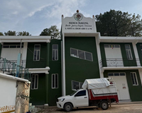

|
 |
BENITO JUAREZ Benito juarez cuquila es una pequeña comunidad rural. que pertenece al municipio de Tlaxico, Oaxaca. la localidad esta asentrada en territorios ansestrales mixtecos que rodean a la cabecera municipal de Tlaxiaco. su nombre rinde honor al Benemerito de las americas, Benito Juarez MMGarcia, entrelasando el reconocimiento al presidente indigena mas importante de Mexico con la identidad local de la zona. La comunidad cuenta con vestigios arqueologicos prehispanicos y una fuerte yradicion oral que porma parte de la herencia de los puplos de la Mixteca. |
| BENITO JUAREZ |